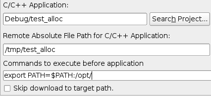
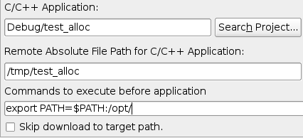

Remote System Explorer (RSE)



The emphasis on the TM 3.1 release has been bug fixes, so there are not too many new features to mention. Still, here are some of the more noteworthy things you'll find in TM 3.1 (June 25, 2009) which is now available for download. See the TM 3.1 release notes as well as the build notes for details about API changes, bugs fixed and other changes.
Remote System Explorer (RSE) |
|
| Team Review/Synchronize with Import/Export | Users have the option of selecting Review/Synchronize from the
Remote file system Export and Import wizards when doing and export or import. This has the
effect of using the Platform Team view to see changes between remote and local source before
committing changes to/from a remote system.
For more details, see bug
[185925].
|
| Allowing Files from the same Host but from a Different Connection to be Mapped to Different Locations | This feature provides a preference allowing users to choose whether files on the same host but different connections should get mapped to the same local temporary file location as each other. For details, see bug [245260]. |
| Show in Remote Systems view | This feature provides the ability to select a remote object in a given view, such as the Remote System Details view or the Remote Scratchpad and have it displayed in the Remote Systems view. This also allows a user to select resource in the Resource Navigator view and have the corresponding resource displayed in the Remote Systems view. For details, see bug [160105]. and [218227] |
| Drag and Drop of Hosts to Change Order | The user is able to drag and drop Host objects in the Remote Systems view in order to change the order in which they appear. For details, see bug [196166]. |
| Small Fixes and Enhancements | Several small fixes and enhancements were made: |
| RSE Terminal Integration | A "Terminals" subsystem for Telnet is now available in RSE in addition to SSH [227569]. A Generic RSE Shell Service can now run based on adapting any ITerminalService [240523], thus allowing implementers of a new protocol create a terminal service and immediately get the shell service from it. |
| Remote CDT Launch feature was moved to CDT | The remoteCDT feature has been moved to the CDT project as of the CDT M7 release. For details, see bug [267065]. |
| Remote CDT Launcher Supports Commands Before Launch | The Remote CDT Launch now supports running arbitrary commands
before actually invoking the debuggee. This allows fine-tuning the environment on the remote machine where
the program will run.
For more details, see bug
[181517].
 |
More details about API changes, new features and bugs fixed are in the build notes of the earlier TM 3.1 milestone builds: